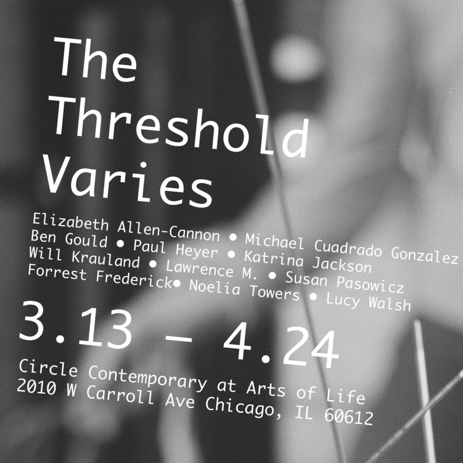

The Threshold Varies
Elizabeth Allen-Cannon – Michael Cuadrado Gonzalez – Forrest Frederick – Ben Gould – Paul Heyer – Katrina Jackson – Will Krauland – Lawrence M. – Susan Pasowicz – Noelia Towers – Lucy Walsh
RADAR is pleased to present The Threshold Varies, a group exhibition featuring artists who engage in perception as something that is variable, contingent, and unstable. Artists include Elizabeth Allen-Cannon, Michael Cuadrado Gonzalez, Ben Gould, Paul Heyer, Katrina Jackson, Will Krauland, Lawrence M, Susan Pasowicz, Forrest Frederick, Noelia Towers, and Lucy Walsh.
In psychophysics, the idea of the ‘absolute threshold’ is defined by the minimum intensity required for a stimulus to be sensed. It is the the point at which sound, color, or light crosses from not perceived into perceptible. It is a boundary that is never fixed, as it shifts with duration, proximity, and expectation, and becomes blurred over time with continual exposure.
In image-making, these boundaries are seen as similarly uncertain. We trust the image as it exists, relying on what is before us, even as its edges remain contingent and provisional. The works in The Threshold Varies operate within this tension between containment and overflow, hovering at the limits of visibility and testing how intensity becomes legible.
About RADAR and Madeline Gallucci:
Madeline Gallucci is a Chicago-based artist and arts administrator, and founder of RADAR, a curatorial platform established in 2018 to support Midwest artists through emerging and collaborative initiatives.Through RADAR, she has developed multiple exhibitions and partnerships, most notably Roommate, a temporary exhibition series where she paired two artists in the spare bedroom of her Humboldt Park apartment. Recent projects also include curating the Artspace Project Wall at the Todd and Emily Voth Artspace in Kansas City, Missouri.
Madeline received her BFA from the Kansas City Art Institute in 2012 and her MFA from the University of Chicago in 2020. She has exhibited her work most recently at Grunts Rare Books, Weatherproof, Sawhorse and Goldfinch in Chicago, IL.
March 13–April 24, 2026